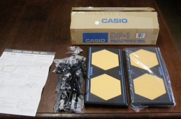
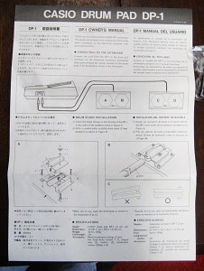
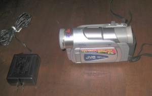
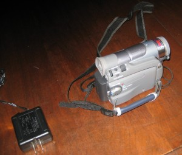
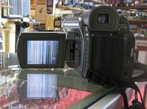
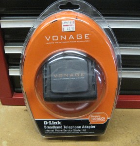
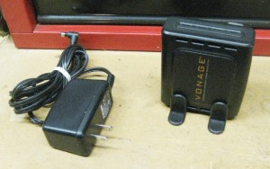
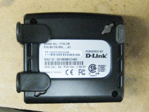

Archive for the ‘Electronic’ Category.
16th January 2013, 11:42 am
I have this new Casio DP-1 drum pad set. It was packed in a cardboard box. Brackets for attaching it to a drum stand are still sealed in their plastic bags. The instruction sheet is included. As you can see in the pictures, I removed one drum set from its bag for the pictures. 


I don’t believe anything was ever opened before. Bar code number 79767 39016 along with “made in Japan” was the only other information on the box.
I could find no date.
Instructions state it is for connecting to a Casiotone Keyboard. My old Casio keyboard did not have the right jacks to plug the Drum Pads in. If it had I probably would have given this to my Grandsons, as it is it needs a good home
I am asking $29.00 plus postage for it. I am open to offers. I accept PayPal. I can be reached at rodander@frontiernet.net
10th January 2013, 11:06 am
I have a JVC digital video camera model no. GR-D30V. It says 700X digital zoom, 16X optical zoom, 520 resolution. I have the battery and the charger but no tape. The controls all seem to work. As you can see on the pictures below the screen is all garbled lines.

The camera is clean and looks good. I had planned to repair it myself, so I have been saving it for a couple of years. I have decided this is beyond my ability and ambition. I do not have the owners manual but that is available on line.
I am asking $50.00 plus postage for it. I am open to offers. I do accept PayPal. I can be reached at rodander@frontiernet.net
9th January 2013, 10:41 am

I have two Vonage D-Link broadband telephone adapters. The first is brand new sealed in its plastic box with all accessory’s. It is labeled internet phone service and starter kit The original price tag is on it yet, stating $49.99.
The second was used and has no package and no instruction book. I will include the phone cable. They are both Model VTA-VR .
My son used the system for a time in his business and had the new one as a spare.
I contemplated adopting this phone system. I figured it wasn’t worth the effort for this old man to learn something new.
They have been on my shelf for over a year. I really know very little about them, so it is now time for me to sell them.
I will sell both for $35.00 plus postage. I would be open to offers as I need to move them along. I do accept PayPal. Contact me at rodander@frontiernet.net


{kind=link}
{kind=link}
{kind=link}
{kind=link}
{kind=link}
{kind=link}
{kind=link}
{kind=link}